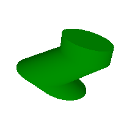

CustomMaterial QML Type
Base component for creating custom materials used to shade models. More...
| Import Statement: | import QtQuick3D |
| Inherits: |
Properties
- alwaysDirty : bool
- destinationAlphaBlend : enumeration
(since 6.7) - destinationBlend : enumeration
- fragmentShader : url
- lineWidth : real
- shadingMode : enumeration
- sourceAlphaBlend : enumeration
(since 6.7) - sourceBlend : enumeration
- vertexShader : url
Detailed Description
The custom material allows using custom shader code for a material, enabling programmability on graphics shader level. A vertex, fragment, or both shaders can be provided. The vertexShader and fragmentShader properties are URLs, referencing files containing shader snippets, and work very similarly to ShaderEffect or Image.source. Only the file and qrc schemes are supported with custom materials. It is also possible to omit the file scheme, allowing to specify a relative path in a convenient way. Such a path is resolved relative to the component's (the .qml file's) location.
For a getting started guide to custom materials, see the page Programmable Materials, Effects, Geometry, and Texture data.
Introduction
Consider the following versions of the same scene. On the left, the cylinder is using a built-in, non-programmable material. Such materials are configurable through a wide range of properties, but there is no further control given over the shaders that are generated under the hood. On the right, the same cylinder is now associated with a CustomMaterial referencing application-provided vertex and fragment shader snippets. This allows inserting custom, application-specific logic into the vertex shader to transform the geometry, and to determine certain color properties in a custom manner in the fragment shader. As this is a shaded custom material, the cylinder still participates in the scene lighting normally.
View3D { anchors.fill: parent PerspectiveCamera { id: camera position: Qt.vector3d(0, 0, 600) } camera: camera DirectionalLight { position: Qt.vector3d(-500, 500, -100) color: Qt.rgba(0.2, 0.2, 0.2, 1.0) ambientColor: Qt.rgba(0.1, 0.1, 0.1, 1.0) } Model { source: "#Cylinder" eulerRotation: Qt.vector3d(30, 30, 0) scale: Qt.vector3d(1.5, 1.5, 1.5) materials: [ DefaultMaterial { diffuseColor: Qt.rgba(0, 1, 0, 1) } ] } } | View3D { anchors.fill: parent PerspectiveCamera { id: camera position: Qt.vector3d(0, 0, 600) } camera: camera DirectionalLight { position: Qt.vector3d(-500, 500, -100) color: Qt.rgba(0.2, 0.2, 0.2, 1.0) ambientColor: Qt.rgba(0.1, 0.1, 0.1, 1.0) } Model { source: "#Cylinder" eulerRotation: Qt.vector3d(30, 30, 0) scale: Qt.vector3d(1.5, 1.5, 1.5) materials: [ CustomMaterial { vertexShader: "material.vert" fragmentShader: "material.frag" property real uTime property real uAmplitude: 50 NumberAnimation on uTime { from: 0; to: 100; duration: 10000; loops: -1 } } ] } } |
Let's assume that the shader snippets in material.vert and material.frag are the following:
void MAIN()
{
VERTEX.x += sin(uTime + VERTEX.y) * uAmplitude;
}
|
void MAIN()
{
BASE_COLOR = vec4(0.0, 1.0, 0.0, 1.0);
}
|
Notice how uTime and uAmplitude are properties of the CustomMaterial element. They can change values and get animated normally, the values will be exposed to the shaders automatically without any further action from the developer.
The result is a cylinder that animates its vertices:

Two flavors of custom materials
There are two main types of custom materials. This is specified by the shadingMode property. In unshaded custom materials the fragment shader outputs a single vec4 color, ignoring lights, light probes, shadowing in the scene. In shaded materials the shader is expected to implement certain functions and work with built-in variables to take lighting and shadow contribution into account.
The default choice is typically a shaded material, this is reflected in the default value of the shadingMode property. This fits materials that needs to transform vertices or other incoming data from the geometry, or determine values like BASE_COLOR or EMISSIVE_COLOR in a custom manner, perhaps by sampling SCREEN_TEXTURE or DEPTH_TEXTURE, while still reciving light and shadow contributions from the scene. Additionally, such materials can also override and reimplement the equations used to calculate the contributions from directional, point, and other lights. The application-provided shader snippets are heavily amended by the Qt Quick 3D engine under the hood, in order to provide the features, such as lighting, the standard materials have.
Unshaded materials are useful when the object's appearance is determined completely by the custom shader code. The shaders for such materials receive minimal additions by the engine, and therefore it is completely up to the shader to determine the final fragment color. This gives more freedom, but also limits possiblities to integrate with other elements of the scene, such as lights.
Note: Shader code is always provided using Vulkan-style GLSL, regardless of the graphics API used by Qt at run time.
Note: The vertex and fragment shader code provided by the material are not full, complete GLSL shaders on their own. Rather, they provide a set of functions, which are then amended with further shader code by the engine.
Exposing data to the shaders
The dynamic properties of the CustomMaterial can be changed and animated using QML and Qt Quick facilities, and the values are exposed to the shaders automatically. This in practice is very similar ShaderEffect. The following list shows how properties are mapped:
- bool, int, real -> bool, int, float
- QColor, color -> vec4, and the color gets converted to linear, assuming sRGB space for the color value specified in QML. The built-in Qt colors, such as
"green"are in sRGB color space as well, and the same conversion is performed for all color properties of DefaultMaterial and PrincipledMaterial, so this behavior of CustomMaterial matches those. Unlike Qt Quick, for Qt Quick 3D linearizing is essential as there will typically be tonemapping performed on the 3D scene. - QRect, QRectF, rect -> vec4
- QPoint, QPointF, point, QSize, QSizeF, size -> vec2
- QVector2D, vector2d -> vec2
- QVector3D, vector3d -> vec3
- QVector4D, vector4d -> vec4
- QMatrix4x4, matrix4x4 -> mat4
- QQuaternion, quaternion -> vec4, scalar value is
w - TextureInput -> sampler2D or samplerCube, depending on whether Texture or CubeMapTexture is used in the texture property of the TextureInput. Setting the enabled property to false leads to exposing a dummy texture to the shader, meaning the shaders are still functional but will sample a texture with opaque black image content. Pay attention to the fact that properties for samplers must always reference a TextureInput object, not a Texture directly. When it comes to the Texture properties, the source, tiling, and filtering related ones are the only ones that are taken into account implicitly with custom materials, as the rest (such as, UV transformations) is up to the custom shaders to implement as they see fit.
Note: When a uniform referenced in the shader code does not have a corresponding property, it will cause a shader compilation error when processing the material at run time. There are some exceptions to this, such as, sampler uniforms, that get a dummy texture bound when no corresponding QML property is present, but as a general rule, all uniforms and samplers must have a corresponding property declared in the CustomMaterial object.
Unshaded custom materials
The following is an example of an unshaded custom material.
CustomMaterial { // These properties are automatically exposed to the shaders property real time: 0.0 property real amplitude: 5.0 property real alpha: 1.0 property TextureInput tex: TextureInput { enabled: true texture: Texture { source: "image.png" } } shadingMode: CustomMaterial.Unshaded sourceBlend: alpha < 1.0 ? CustomMaterial.SrcAlpha : CustomMaterial.NoBlend destinationBlend: alpha < 1.0 ? CustomMaterial.OneMinusSrcAlpha : CustomMaterial.NoBlend cullMode: CustomMaterial.BackFaceCulling vertexShader: "customshader.vert" fragmentShader: "customshader.frag" }
With the above example, the unshaded vertex and fragment shaders snippets could look like the following. Note how the shaders do not, and must not, declare uniforms or vertex inputs as that is taken care of by Qt when assembling the final shader code.
VARYING vec3 pos;
VARYING vec2 texcoord;
void MAIN()
{
pos = VERTEX;
pos.x += sin(time * 4.0 + pos.y) * amplitude;
texcoord = UV0;
POSITION = MODELVIEWPROJECTION_MATRIX * vec4(pos, 1.0);
}
VARYING vec3 pos;
VARYING vec2 texcoord;
void MAIN()
{
vec4 c = texture(tex, texcoord);
FRAGCOLOR = vec4(pos.x * 0.02, pos.y * 0.02, pos.z * 0.02, alpha) * c;
}
The following special, uppercase keywords are available:
- MAIN -> the name of the entry point in the vertex or fragment shader snippet must always be
MAIN. Providing this function is mandatory in shader snippets for unshaded custom materials. - VARYING -> declares an output from the vertex shader or an input to the fragment shader
- POSITION -> vec4, the output from the vertex shader
- FRAGCOLOR -> vec4, the output from the fragment shader. Available only for unshaded custom materials.
- VERTEX -> vec3, the vertex position in the vertex shader.
- NORMAL -> vec3, the vertex normal in the vertex shader. When the mesh for the associated model does not provide normals, the value is vec3(0.0).
- UV0 -> vec2, the first set of texture coordinates in the vertex shader. When the mesh for the associated model does not provide texture coordinates, the value is vec2(0.0).
- UV1 -> vec2, the second set of texture coordinates in the vertex shader. When the mesh for the associated model does not provide a second set of texture coordinates, the value is vec2(0.0).
- COLOR -> vec4, the vertex color in the vertex shader. When the mesh for the associated model does not provide per-vertex colors, the value is vec4(1.0).
- TANGENT -> vec3, tangent in the vertex shader. When the mesh for the associated model does not provide tangent data, the value is vec3(0.0).
- BINORMAL -> vec3, binormal in the vertex shader. When the mesh for the associated model does not provide binormal data, the value is vec3(0.0).
- JOINTS -> ivec4, joint indexes in the vertex shader. When the mesh for the associated model does not provide joint indexes data, the value is ivec4(0).
- WEIGHTS -> vec4, joint weights in the vertex shader. When the mesh for the associated model does not provide joint weights data, the value is vec4(0.0).
- MORPH_POSITION(n) -> vec3, the n+1th morph target position in the vertex shader. The associated model should provide proper data.
- MORPH_NORMAL(n) -> vec3, the n+1th morph target normal in the vertex shader. The associated model should provide proper data.
- MORPH_TANGENT(n) -> vec3, the n+1th morph target tangent in the vertex shader. The associated model should provide proper data.
- MORPH_BINORMAL(n) -> vec3, the n+1th morph target binormal in the vertex shader. The associated model should provide proper data.
- MODELVIEWPROJECTION_MATRIX -> mat4, the model-view-projection matrix. Projection matrices always follow OpenGL conventions, with a baked-in transformation for the Y axis direction and clip depth, depending on the graphics API used at run time.
- VIEWPROJECTION_MATRIX -> mat4, the view-projection matrix
- PROJECTION_MATRIX -> mat4, the projection matrix
- INVERSE_PROJECTION_MATRIX -> mat4, the inverse projection matrix
- VIEW_MATRIX -> mat4, the view (camera) matrix
- MODEL_MATRIX -> mat4, the model (world) matrix
- NORMAL_MATRIX -> mat3, the normal matrix (the transpose of the inverse of the top-left 3x3 part of the model matrix)
- BONE_TRANSFORMS -> mat4[], the array of the model's bone matrixes
- BONE_NORMAL_TRANSFORMS -> mat3[], the array of the model's bone normal matrixes (the transpose of the inverse of the top-left 3x3 part of the each bone matrixes)
- MORPH_WEIGHTS -> float[], the array of the morph weights. The associated model should provide proper data. For safety, QT_MORPH_MAX_COUNT is defined to the size of this array.
- CAMERA_POSITION -> vec3, the camera position in world space
- CAMERA_DIRECTION -> vec3, the camera direction vector
- CAMERA_PROPERTIES -> vec2, the near and far clip values for the camera
- POINT_SIZE -> float, writable in the vertex shader only. When rendering geometry with a topology of points, the custom vertex shader must set this to either 1.0 or another value, both in shaded and unshaded custom materials. See PrincipledMaterial::pointSize for further notes on support for sizes other than 1.
Shaded custom materials
A shaded material augments the shader code that would be generated by a PrincipledMaterial. Unlike unshaded materials, that provide almost all logic for the vertex and fragment shader main functions on their own, preventing adding generated code for lighting, shadowing, global illumination, etc., shaded materials let shader generation happen normally, as if the CustomMaterial was a PrincipledMaterial. The vertex and fragment shader snippets are expected to provide optional functions that are then invoked at certain points, giving them the possibility to customize the colors and other values that are then used for calculating lighting and the final fragment color.
Rather than implementing just a MAIN function, the fragment shader for a shaded custom material can implement multiple functions. All functions, including MAIN, are optional to implement in shaded custom materials. An empty shader snippet, or, even, not specifying the vertexShader or fragmentShader properties at all can be perfectly valid too.
Vertex shader snippets in a shaded custom material
The following functions can be implemented in a vertex shader snippet:
void MAIN()When present, this function is called in order to set the value ofPOSITION, the vec4 output from the vertex shader, and, optionally, to modify the values ofVERTEX,COLOR,NORMAL,UV0,UV1,TANGENT,BINORMAL,JOINTS, andWEIGHTS. Unlike in unshaded materials, writing to these makes sense because the modified values are then taken into account in the rest of the generated shader code (whereas for unshaded materials there is no additional shader code generated). For example, if the custom vertex shader displaces the vertices or the normals, it will want to store the modified values toVERTEXorNORMAL, to achieve correct lighting calculations afterwards. Additionally, the function can write to variables defined withVARYINGin order to pass interpolated data to the fragment shader. When this function or a redefinition ofPOSITIONis not present,POSITIONis calculated based onVERTEXandMODELVIEWPROJECTION_MATRIX, just like a PrincipledMaterial would do.Example, with relying both on QML properties exposed as uniforms, and also passing data to the fragment shader:
VARYING vec3 vNormal; VARYING vec3 vViewVec; void MAIN() { VERTEX.x += sin(uTime * 4.0 + VERTEX.y) * uAmplitude; vNormal = normalize(NORMAL_MATRIX * NORMAL); vViewVec = CAMERA_POSITION - (MODEL_MATRIX * vec4(VERTEX, 1.0)).xyz; POSITION = MODELVIEWPROJECTION_MATRIX * vec4(VERTEX, 1.0); }Note: In the above example, assigning a value to
POSITIONis optional as the usage in this case is identical to the default behavior.
Fragment shader snippets in a shaded custom material
The following functions can be implemented in a fragment shader snippet:
void MAIN()When present, this function is called to set the values of the special writable variablesBASE_COLOR,METALNESS,ROUGHNESS,SPECULAR_AMOUNT, NORMAL, andFRESNEL_POWER.One common use case is to set the value of
BASE_COLORbased on sampling a texture, be it a base color map,SCREEN_TEXTURE, or some other kind of source. This can be relevant and convenient especially when no custom light processor functions are implemented. SettingBASE_COLOR.ato something other than the default 1.0 allows affecting the final alpha value of the fragment. (note that this will often require also enabling alpha blending in sourceBlend and destinationBlend)Another scenario is when there is no custom
SPECULAR_LIGHTfunction provided, or when there is a light probe set in the SceneEnvironment. The metalness, roughness, and other values that affect the specular contribution calculation can be set inMAINto their desired custom values.The function can write to the following special variables. The values written to these will typically be either hardcoded or be calculated based on QML properties mapped to uniforms. The semantics are identical to PrincipledMaterial.
- vec4
BASE_COLOR- The base color and material alpha value. Corresponds to the built-in materials' color property. When light processor functions are not implemented, it can be convenient to set a custom base color inMAINbecause that is then taken into account in the default lighting calculations. The default value isvec4(1.0), meaning white with an alpha of 1.0. The alpha value effects the final alpha of the fragment. The final alpha value is the object (model) opacity multiplied by the base color alpha. When specifying the value directly in shader code, not relying on uniform values exposed from color properties in QML, be aware that it is up to the shader to perform the sRGB to linear conversion, if needed. For example, assuming avec3 colorandfloat alphathis can be achieved like the following:float C1 = 0.305306011; vec3 C2 = vec3(0.682171111, 0.682171111, 0.682171111); vec3 C3 = vec3(0.012522878, 0.012522878, 0.012522878); BASE_COLOR = vec4(rgb * (rgb * (rgb * C1 + C2) + C3), alpha);
- vec3
EMISSIVE_COLOR- The color of self-illumination. Corresponds to the built-in materials' emissive color which is combined by built-in materials's emissiveFactor property and built-in materials's emissiveMap property. The default value isvec3(0.0). When specifying the value directly in shader code, not relying on uniform values exposed from color properties in QML, be aware that it is up to the shader to perform the sRGB to linear conversion, if needed. - float
METALNESSMetalness amount in range 0.0 - 1.0. The default value is 0. Must be set to a non-zero value to have effect. - float
ROUGHNESSRoughness value in range 0.0 - 1.0. The default value is 0. - float
FRESNEL_POWERSpecifies the fresnel power. A typical value, and also the default, is5.0as that is what a PrincipledMaterial would use. - float
SPECULAR_AMOUNTSpecular amount in range 0.0 - 1.0. The default value is0.5, matching PrincipledMaterial::specularAmount. Must be set to a non-zero value to have effect. - vec3
NORMAL- The normal that comes from the vertex shader in world space. While this property has the same initial value asVAR_WORLD_NORMAL, only changing the value ofNORMALwill have an effect on lighting. - vec3
TANGENT- The tanget that comes from the vertex shader in world space. This value is potentially adjusted for double-sidedness. - vec3
BINORMAL- The binormal that comes from the vertex shader in world space. This value is potentially adjusted for double-sidedness. - vec2
UV0- The first set of texture coordinates from the vertex shader. This property is readonly in the fragment shader. - vec2
UV1- The second set of texture coordinates from the vertex shader. This property is readonly in the fragment shader.
Note: Unlike with unshaded materials, the fragment
MAINfor a shaded material has no direct control overFRAGCOLOR. Rather, it is theDIFFUSEandSPECULARvalues written in the light processor functions that decide what the final fragment color is. When a light processor function is not implemented, the relevant default shading calculations are performed as with a PrincipledMaterial, takingBASE_COLORand other values from the list above into account.An example of a simple, metallic custom material shader could be the following:
void MAIN() { METALNESS = 1.0; ROUGHNESS = 0.5; FRESNEL_POWER = 5.0; }Another example, where the base color and alpha are set by sampling a texture:
VARYING vec2 texcoord; void MAIN() { BASE_COLOR = texture(uColorMap, texcoord); }- vec4
void AMBIENT_LIGHT()When present, this function is called once for each fragment. The task of the function is to add the total ambient contribution to a writable special variableDIFFUSE. It can of course choose to calculate a different value, or not touchDIFFUSEat all (to ignore ambient lighting completely). When this function is not present at all, the ambient contribution is calculated normally, like a PrincipledMaterial would do.The function can write to the following special variables:
- vec3
DIFFUSEAccumulates the diffuse light contributions, per fragment. The light processor functions will typically add (+=) to it, since overwriting the value would lose the contribution from other lights.
The function can read the following special variables, in addition to the matrix (such as,
MODEL_MATRIX) and vector (such as,CAMERA_POSITION) uniforms from the table above:- vec3
TOTAL_AMBIENT_COLORThe total ambient contribution in the scene.
Example:
void AMBIENT_LIGHT() { DIFFUSE += TOTAL_AMBIENT_COLOR; }- vec3
void DIRECTIONAL_LIGHT()When present, this function is called for each active directional light in the scene for each fragment. The task of the function is to add the diffuse contribution to a writable special variableDIFFUSE. The function can also choose to do nothing, in which case diffuse contributions from directional lights are ignored. When the function is not present at all, the diffuse contributions from directional lights are accumulated normally, like a PrincipledMaterial would do.The function can write to the following special variables:
- vec3
DIFFUSEAccumulates the diffuse light contributions, per fragment. The light processor functions will typically add (+=) to it, since overwriting the value would lose the contribution from other lights.
The function can read the following special variables, in addition to the matrix (such as,
MODEL_MATRIX) and vector (such as,CAMERA_POSITION) uniforms from the table above:- vec3
LIGHT_COLORDiffuse light color. - float
SHADOW_CONTRIBShadow contribution, or 1.0 if not shadowed at all or not reciving shadows. - vec3
TO_LIGHT_DIRVector pointing towards the light source. - vec3
NORMALThe normal vector in world space. - vec4
BASE_COLORThe base color and material alpha value. - float
METALNESSThe Metalness amount. - float
ROUGHNESSThe Roughness amount.
Example:
void DIRECTIONAL_LIGHT() { DIFFUSE += LIGHT_COLOR * SHADOW_CONTRIB * vec3(max(0.0, dot(normalize(VAR_WORLD_NORMAL), TO_LIGHT_DIR))); }- vec3
void POINT_LIGHT()When present, this function is called for each active point light in the scene for each fragment. The task of the function is to add the diffuse contribution to a writable special variableDIFFUSE. The function can also choose to do nothing, in which case diffuse contributions from point lights are ignored. When the function is not present at all, the diffuse contributions from point lights are accumulated normally, like a PrincipledMaterial would do.The function can write to the following special variables:
- vec3
DIFFUSEAccumulates the diffuse light contributions, per fragment.
The function can read the following special variables, in addition to the matrix (such as,
MODEL_MATRIX) and vector (such as,CAMERA_POSITION) uniforms from the table above:- vec3
LIGHT_COLORDiffuse light color. - float
LIGHT_ATTENUATIONLight attenuation. - float
SHADOW_CONTRIBShadow contribution, or 1.0 if not shadowed at all or not reciving shadows. - vec3
TO_LIGHT_DIRVector pointing towards the light source. - vec3
NORMALThe normal vector in world space. - vec4
BASE_COLORThe base color and material alpha value. - float
METALNESSThe Metalness amount. - float
ROUGHNESSThe Roughness amount.
Example:
void POINT_LIGHT() { DIFFUSE += LIGHT_COLOR * LIGHT_ATTENUATION * SHADOW_CONTRIB * vec3(max(0.0, dot(normalize(VAR_WORLD_NORMAL), TO_LIGHT_DIR))); }- vec3
void SPOT_LIGHT()When present, this function is called for each active spot light in the scene for each fragment. The task of the function is to add the diffuse contribution to a writable special variableDIFFUSE. The function can also choose to do nothing, in which case diffuse contributions from spot lights are ignored. When the function is not present at all, the diffuse contributions from spot lights are accumulated normally, like a PrincipledMaterial would do.The function can write to the following special variables:
- vec3
DIFFUSEAccumulates the diffuse light contributions, per fragment.
The function can read the following special variables, in addition to the matrix (such as,
MODEL_MATRIX) and vector (such as,CAMERA_POSITION) uniforms from the table above:- vec3
LIGHT_COLORDiffuse light color. - float
LIGHT_ATTENUATIONLight attenuation. - float
SHADOW_CONTRIBShadow contribution, or 1.0 if not shadowed at all or not reciving shadows. - vec3
TO_LIGHT_DIRVector pointing towards the light source. - float
SPOT_FACTORSpot light factor. - vec3
NORMALThe normal vector in world space. - vec4
BASE_COLORThe base color and material alpha value. - float
METALNESSThe Metalness amount. - float
ROUGHNESSThe Roughness amount.
Example:
void SPOT_LIGHT() { DIFFUSE += LIGHT_COLOR * LIGHT_ATTENUATION * SPOT_FACTOR * SHADOW_CONTRIB * vec3(max(0.0, dot(normalize(VAR_WORLD_NORMAL), TO_LIGHT_DIR))); }- vec3
void SPECULAR_LIGHT()When present, this function is called for each active light in the scene for each fragment. The task of the function is to add the specular contribution to a writable special variableSPECULAR. The function can also choose to do nothing, in which case specular contributions from lights are ignored. When the function is not present at all, the specular contributions from lights are accumulated normally, like a PrincipledMaterial would do.The function can write to the following special variables:
- vec3
SPECULARAccumulates the specular light contributions, per frament. The light processor functions will typically add (+=) to it, since overwriting the value would lose the contribution from other lights.
The function can read the following special variables, in addition to the matrix (such as,
MODEL_MATRIX) and vector (such as,CAMERA_POSITION) uniforms from the table above:- vec3
LIGHT_COLORSpecular light color. - float
LIGHT_ATTENUATIONLight attenuation. For directional lights the value is 1.0. For spot lights the value is the same asLIGHT_ATTENUATION * SPOT_FACTORofvoid SPOT_LIGHT(). - float
SHADOW_CONTRIBShadow contribution, or 1.0 if not shadowed at all or not reciving shadows. - vec3
FRESNEL_CONTRIBFresnel contribution from built in Fresnel calculation. - vec3
TO_LIGHT_DIRVector pointing towards the light source. - vec3
NORMALThe normal vector in world space. - vec4
BASE_COLORThe base color and material alpha value. - float
METALNESSThe Metalness amount. - float
ROUGHNESSThe Roughness amount. - float
SPECULAR_AMOUNTThe specular amount. This value will be between 0.0 and 1.0 will be the same value set in the customMAINfunction. This value will useful for calculating Fresnel contributions when not using the built-in Fresnel contribution provided byFRESNEL_CONTRIB.
void SPECULAR_LIGHT() { vec3 H = normalize(VIEW_VECTOR + TO_LIGHT_DIR); float cosAlpha = max(0.0, dot(H, normalize(NORMAL))); float shine = pow(cosAlpha, exp2(15.0 * (1.0 - ROUGHNESS) + 1.0) * 0.25); SPECULAR += shine * LIGHT_COLOR * FRESNEL_CONTRIB * SHADOW_CONTRIB * LIGHT_ATTENUATION; }- vec3
void POST_PROCESS()When present, this function is called at the end of the fragment pipeline. The task of the function is to finalizeCOLOR_SUMwith final diffuse, specular and emissive terms. UnlikeFRAGCOLORfor a unshaded material,COLOR_SUMwill be automatically tonemapped before written to the framebuffer. For debugging purposes it is sometimes useful to output a value that should not be treated as a color. To avoid the tonemapping distorting this value it can be disabled by setting the tonemapMode property toTonemapModeNoneThe function can write to the following special variables:
- vec4
COLOR_SUMthe output from the fragment shader. The default value is vec4(DIFFUSE.rgb + SPECULAR + EMISSIVE, DIFFUSE.a)
The function can read the following special variables.
- vec4
DIFFUSEThe final diffuse term of the fragment pipeline. - vec3
SPECULARThe final specular term of the fragment pipeline. - vec3
EMISSIVEThe final emissive term of the fragment pipeline. - vec2
UV0- The first set of texture coordinates from the vertex shader. - vec2
UV1- The second set of texture coordinates from the vertex shader.
void POST_PROCESS() { float center_x = textureSize(SCREEN_TEXTURE, 0).x * 0.5; if (gl_FragCoord.x > center_x) COLOR_SUM = DIFFUSE; else COLOR_SUM = vec4(EMISSIVE, DIFFUSE.a); }- vec4
void IBL_PROBE()When present, this function is called for IBL (Image-Based Lighting). The task of the function is to add both the diffuse and the specular contributions of IBL to writable special variablesDIFFUSEandSPECULAR.The function can write to the following special variables:
- vec3
DIFFUSEAccumulates the diffuse light contributions, per fragment. - vec3
SPECULARAccumulates the specular light contributions, per frament.
The function can read the following special variables.
- vec4
BASE_COLORThe base color and material alpha value. - float
AO_FACTORThe screen space occlusion factor. - float
SPECULAR_AMOUNTThe specular amount. - float
ROUGHNESSThe final emissive term of the fragment pipeline. - vec3
NORMALThe normal vector in world space. - vec3
VIEW_VECTORPoints towards the camera. - mat3
IBL_ORIENTATIONThe orientation of the light probe. It comes from SceneEnvironment::probeOrientation.
void IBL_PROBE() { vec3 smpDir = IBL_ORIENTATION * NORMAL; DIFFUSE += AO_FACTOR * BASE_COLOR.rgb * textureLod(IBL_TEXTURE, smpDir, IBL_MAXMIPMAP).rgb; }- vec3
Custom variables between functions
Additional variables can be delivered from the MAIN function to the others. The SHARED_VARS keyword can be used for defining new custom variables. These user-defined variables can be accessed with SHARED.<variable name>.
For example, a shaded custom material can fetch a shared value in the MAIN and use it in other functions.
SHARED_VARS {
vec3 colorThreshold;
};
void MAIN()
{
BASE_COLOR = texture(baseColorMap, UV0);
SHARED.colorThreshold = texture(thresholdMap, UV0).rgb;
}
void DIRECTIONAL_LIGHT()
{
if (DIFFUSE >= SHARED.colorThreshold) {
DIFFUSE = SHARED.colorThreshold;
return;
}
DIFFUSE += LIGHT_COLOR * SHADOW_CONTRIB;
}
Note: SHARED can be written on all the functions without POST_PROCESS but it is safe to write it on MAIN and read on the other functions.
Note: A recommended use case to write SHARED on LIGHT functions is reseting it on MAIN first and then accumulating it on each LIGHT functions.
SHARED_VARS {
float sheenIntensity;
float sheenRoughness;
vec3 sheenColor;
vec3 outSheenColor;
};
void MAIN()
{
...
vec4 tex = texture(uSheenMap, UV0);
SHARED.sheenColor = tex.rgb;
SHARED.sheenIntensity = tex.a;
SHARED.sheenRoughness = uSheenRoughness;
SHARED.outSheenColor = vec3(0.0);
}
void SPECULAR_LIGHT()
{
SHARED.outSheenColor += ...;
}
void POST_PROCESS()
{
COLOR_SUM = DIFFUSE + SPECULAR + EMISSIVE + SHARED.outSheenColor;
}
Note: MAIN is called before others, and POST_PROCESS after all others, but that there is no guarantee for any other ordering for light processors.
Additional special keywords
The custom fragment shader code can freely access uniforms (such as, CAMERA_DIRECTION or CAMERA_POSITION), and varyings passed on from the custom vertex shader. Additionally, there are a number of built-in varyings available as special keywords. Some of these are optional in the sense that a vertex MAIN could calculate and pass on these on its own, but to reduce duplicated data fragment shaders can also rely on these built-ins instead. These built-ins are available in light processor functions and in the fragment MAIN.
- vec3
VAR_WORLD_NORMAL- Interpolated normal transformed byNORMAL_MATRIX. - vec3
VAR_WORLD_TANGENT- Interpolated tangent transformed byMODEL_MATRIX. - vec3
VAR_WORLD_BINORMAL- Interpolated binormal transformed byMODEL_MATRIX - vec3
NORMAL- UnlikeVAR_WORLD_NORMAL, which is the interpolated normal as-is, this value is potentially adjusted for double-sidedness: when rendering with culling disabled, the normal will get inverted as necessary. Therefore lighting and other calculations are recommended to useNORMALinstead ofVAR_WORLD_NORMALin order behave correctly with all culling modes. - vec3
TANGENT- LikeNORMAL, this value is potentially adjusted for double-sidedness: when rendering with culling disabled, the tangent will get inverted as necessary. - vec3
BINORMAL- LikeNORMAL, this value is potentially adjusted for double-sidedness: when rendering with culling disabled, the binormal will get inverted as necessary. - vec3
VAR_WORLD_POSITION- Interpolated world space vertex position ((MODEL_MATRIX * vec4(VERTEX, 1.0)).xyz) - vec4
VAR_COLOR- The interpolated vertex color when colors are provided in the mesh.vec4(1.0)otherwise. - vec3
VIEW_VECTOR- Points towards the camera. This is effectively theCAMERA_POSITION - VAR_WORLD_POSITIONvector normalized. - vec4
FRAGCOORD- Contains the window-relative coordinates of the current fragment. - float
FRAMEBUFFER_Y_UP- The value is1when the Y axis points up in the coordinate system for framebuffers (textures), meaning(0, 0)is the bottom-left corner. The value is-1when the Y axis points down,(0, 0)being the top-left corner. Such differences in the underlying graphics APIs do not concern most custom materials. One notable exception is samplingSCREEN_TEXTUREwith texture coordinates not based onFRAGCOORD. As the orientation ofSCREEN_TEXTUREis tied to the underlying graphics API by nature, using texture coordinates from a mesh may need appropriate adjustments to the Y coordinate.For example, the following fragment shader, suitable for Rectangle or Cube meshes, will display the opaque objects from the scene on the model:
VARYING vec2 texcoord; void MAIN() { vec2 screencoord = texcoord; if (FRAMEBUFFER_Y_UP < 0.0) // effectively: if not OpenGL screencoord.y = 1.0 - screencoord.y; BASE_COLOR = texture(SCREEN_TEXTURE, screencoord); }When sampling textures other than
SCREEN_TEXTUREandDEPTH_TEXTURE, or whenFRAGCOORDis used to calculate the texture coordinate (which would be the typical use case for accessing the screen and depth textures), such an adjustment is not necessary. - float
NDC_Y_UP- The value is1when the Y axis points up in normalized device coordinate space, and-1when the Y axis points down. Y pointing down is the case when rendering happens with Vulkan. Most materials do not need to be concerned by this, but being able to branch based on this can become useful in certain advanced use cases. - float
NEAR_CLIP_VALUE- The value is-1for when the clipping plane range's starts at-1and goes to1. This is true when using OpenGL for rendering. For other rendering backends the value of this property will be0meaning the clipping plane range is0to1. This value is useful with certain techniques involving theDEPTH_TEXTUREFor example, the following fragment shader demonstrates a technique for reconstructing the position of a value from the depth buffer to determine the distance from the current position being rendered. When used in combination with
INVERSE_PROJECTION_MATRIXthe value of depth needs to be in normalized device coordinates so it is important to make sure that the range of depth value reflects that. When theNEAR_CLIP_VALUEis-1then the depth value gets scaled to be between-1and1.void MAIN() { vec2 screen_uv = FRAGCOORD.xy / vec2(textureSize(SCREEN_TEXTURE, 0)); float depth = texture(DEPTH_TEXTURE, screen_uv).r; if (NEAR_CLIP_VALUE < 0.0) // effectively: if opengl depth = depth * 2.0 - 1.0; vec4 unproject = INVERSE_PROJECTION_MATRIX * vec4(screen_uv, depth, 1.0); depth = (unproject.xyz / unproject.w).z; float viewVectorZ = (VIEW_MATRIX * vec4(VAR_WORLD_POSITION, 1.0)).z; depth = viewVectorZ - depth; BASE_COLOR = vec4(depth, depth, depth, 1.0); } - float
IBL_EXPOSE- The amount of light emitted by the light probe. It comes from SceneEnvironment::probeExposure.DIFFUSE += AO_FACTOR * IBL_EXPOSE * BASE_COLOR.rgb * textureLod(IBL_TEXTURE, NORMAL, IBL_MAXMIPMAP).rgb;
- float
IBL_HORIZON- The horizontal cut-off value of reflections from the lower half environment. It comes from Horizon Cut-Off but remapped to [-1, 0).vec3 diffuse += AO_FACTOR * IBL_EXPOSE * BASE_COLOR.rgb * textureLod(IBL_TEXTURE, NORMAL, IBL_MAXMIPMAP).rgb; if (IBL_HORIZON > -1.0) { float ctr = 0.5 + 0.5 * IBL_HORIZON; float vertWt = smoothstep(ctr * 0.25, ctr + 0.25, NORMAL.y); float wtScaled = mix(1.0, vertWt, IBL_HORIZON + 1.0); diffuse *= wtScaled; } - float
IBL_MAXMIPMAP- The maximum mipmap level of IBL_TEXTURE.
Instancing
When doing instanced rendering, some of the keywords above do not apply. The following keywords are only available with instancing:
INSTANCE_MODEL_MATRIX-> mat4, replacement forMODEL_MATRIX, including the instancing transformation.INSTANCE_MODELVIEWPROJECTION_MATRIX-> mat4, replacement forMODELVIEWPROJECTION_MATRIX, including the instancing transformation.INSTANCE_COLOR-> vec4, the instance color: to be combined withCOLOR.INSTANCE_DATA-> vec4, instance custom data.INSTANCE_INDEX-> int, the instance number, and index into the instancing table.
Screen, depth, and other textures
The rendering pipeline can expose a number of textures to the custom material shaders with content from special render passes. This applies both to shaded and unshaded custom materials.
For example, a shader may want access to a depth texture that contains the depth buffer contents for the opaque objects in the scene. This is achieved by sampling DEPTH_TEXTURE. Such a texture is not normally generated, unless there is a real need for it. Therefore, the presence of the following keywords in the vertex or fragment shader also acts as a toggle for opting in to the - potentially expensive - passes for generating the texture in question. (of course, it could be that some of these become already enabled due to other settings, such as the ambient occlusion parameters in SceneEnvironment or due to a post-processing effect relying on the depth texture, in which case the textures in question are generated regardless of the custom material and so sampling these special textures in the material comes at no extra cost apart from the texture access itself)
SCREEN_TEXTURE- When present, a texture (sampler2D) with the color buffer from a rendering pass containing the contents of the scene excluding any transparent materials or any materials also using the SCREEN_TEXTURE is exposed to the shader under this name. The texture can be used for techniques that require the contents of the framebuffer they are being rendered to. The SCREEN_TEXTURE texture uses the same clear mode as the View3D. The size of these textures matches the size of the View3D in pixels. For example, a fragment shader could contain the following:vec2 uv = FRAGCOORD.xy / vec2(textureSize(SCREEN_TEXTURE, 0)); vec2 displace = vec2(0.1); vec4 c = texture(SCREEN_TEXTURE, uv + displace);
Be aware that using
SCREEN_TEXTURErequires appropriate, conscious design of the scene. Objects using such materials have to be positioned carefully, typically above all other objects that are expected to be visible in the texture. Objects that employ semi-transparency in some form are never part of theSCREEN_TEXTURE. OftenSCREEN_TEXTUREwill be used in combination withBASE_COLORinMAIN. For example, the following custom fragment shader applies an emboss effect, while keeping fragments not touched by opaque objects transparent. This assumes that the object with the material is placed in the front, and that it has blending enabled.void MAIN() { vec2 size = vec2(textureSize(SCREEN_TEXTURE, 0)); vec2 uv = FRAGCOORD.xy / size; // basic emboss effect vec2 d = vec2(1.0 / size.x, 1.0 / size.y); vec4 diff = texture(SCREEN_TEXTURE, uv + d) - texture(SCREEN_TEXTURE, uv - d); float c = (diff.x + diff.y + diff.z) + 0.5; float alpha = texture(SCREEN_TEXTURE, uv).a; BASE_COLOR = vec4(vec3(c), alpha); }SCREEN_MIP_TEXTURE- Identical toSCREEN_TEXTUREin most ways, the difference being that this texture has mipmaps generated. This can be an expensive feature performance-wise, depending on the screen size, and due to having to generate the mipmaps every time the scene is rendered. Therefore, prefer usingSCREEN_TEXTUREalways, unless a technique relying on the texture mip levels (e.g. usingtextureLodin the shader) is implemented by the custom material.DEPTH_TEXTURE- When present, a texture (sampler2D) with the (non-linearized) depth buffer contents is exposed to the shader under this name. Only opaque objects are included. For example, a fragment shader could contain the following:ivec2 dtSize = textureSize(DEPTH_TEXTURE, 0); vec2 dtUV = (FRAGCOORD.xy) / vec2(dtSize); vec4 depthSample = texture(DEPTH_TEXTURE, dtUV); float zNear = CAMERA_PROPERTIES.x; float zFar = CAMERA_PROPERTIES.y; float zRange = zFar - zNear; float z_n = 2.0 * depthSample.r - 1.0; float d = 2.0 * zNear * zFar / (zFar + zNear - z_n * zRange); d /= zFar;
AO_TEXTURE- When present and screen space ambient occlusion is enabled (meaning when the AO strength and distance are both non-zero) in SceneEnvironment, the SSAO texture (sampler2D) is exposed to the shader under this name. Sampling this texture can be useful in unshaded materials. Shaded materials have ambient occlusion support built in. This means that the ambient occlusion factor is taken into account automatically. Whereas in a fragment shader for an unshaded material one could write the following to achieve the same:ivec2 aoSize = textureSize(AO_TEXTURE, 0); vec2 aoUV = (FRAGCOORD.xy) / vec2(aoSize); float aoFactor = texture(AO_TEXTURE, aoUV).x;
IBL_TEXTURE- It will not enable any special rendering pass, but it can be used when the material has Material::lightProbe or the model is in the scope of SceneEnvironment::lightProbe.void IBL_PROBE() { DIFFUSE += AO_FACTOR * BASE_COLOR.rgb * textureLod(IBL_TEXTURE, NORMAL, IBL_MAXMIPMAP).rgb; }
See also SceneEnvironment::tonemapMode, Using Image-Based Lighting, Qt Quick 3D - Custom Shaders Example, Qt Quick 3D - Custom Materials Example, and Programmable Materials, Effects, Geometry, and Texture data.
Property Documentation
alwaysDirty : bool |
Specifies that the material state is always dirty, which indicates that the material needs to be refreshed every time it is used by the QtQuick3D.
destinationAlphaBlend : enumeration |
Specifies the destination alpha blend factor. The default value is CustomMaterial.NoBlend. This value is only actively used if sourceBlend and destinationBlend is set to a non-default value.
| Constant | Value |
|---|---|
CustomMaterial.NoBlend | |
CustomMaterial.Zero | |
CustomMaterial.One | |
CustomMaterial.SrcColor | |
CustomMaterial.OneMinusSrcColor | |
CustomMaterial.DstColor | |
CustomMaterial.OneMinusDstColor | |
CustomMaterial.SrcAlpha | |
CustomMaterial.OneMinusSrcAlpha | |
CustomMaterial.DstAlpha | |
CustomMaterial.OneMinusDstAlpha | |
CustomMaterial.ConstantColor | |
CustomMaterial.OneMinusConstantColor | |
CustomMaterial.ConstantAlpha | |
CustomMaterial.OneMinusConstantAlpha | |
CustomMaterial.SrcAlphaSaturate |
Note: For backwards compatibility purposes, when left to its default value, will be assigned the same value as destinationBlend when sourceBlend and destinationBlend is set to non-default values.
This property was introduced in Qt 6.7.
See also destinationBlend.
destinationBlend : enumeration |
Specifies the destination blend factor. The default value is CustomMaterial.NoBlend.
| Constant | Value |
|---|---|
CustomMaterial.NoBlend | |
CustomMaterial.Zero | |
CustomMaterial.One | |
CustomMaterial.SrcColor | |
CustomMaterial.OneMinusSrcColor | |
CustomMaterial.DstColor | |
CustomMaterial.OneMinusDstColor | |
CustomMaterial.SrcAlpha | |
CustomMaterial.OneMinusSrcAlpha | |
CustomMaterial.DstAlpha | |
CustomMaterial.OneMinusDstAlpha | |
CustomMaterial.ConstantColor | |
CustomMaterial.OneMinusConstantColor | |
CustomMaterial.ConstantAlpha | |
CustomMaterial.OneMinusConstantAlpha | |
CustomMaterial.SrcAlphaSaturate |
Note: Both sourceBlend and destinationBlend needs to be set to a non-default value before blending is enabled.
See also sourceBlend.
fragmentShader : url |
Specfies the file with the snippet of custom fragment shader code.
The value is a URL and must either be a local file or use the qrc scheme to access files embedded via the Qt resource system. Relative file paths (without a scheme) are also accepted, in which case the file is treated as relative to the component (the .qml file).
See also vertexShader.
lineWidth : real |
This property determines the width of the lines rendered, when the geometry is using a primitive type of lines or line strips. The default value is 1.0. This property is not relevant when rendering other types of geometry, such as, triangle meshes.
Warning: Line widths other than 1 may not be suported at run time, depending on the underlying graphics API. When that is the case, the request to change the width is ignored. For example, none of the following can be expected to support wide lines: Direct3D, Metal, OpenGL with core profile contexts.
Note: Unlike the line width, the value of which is part of the graphics pipeline object, the point size for geometries with a topology of points is controlled by the vertex shader (when supported), and has therefore no corresponding QML property.
shadingMode : enumeration |
Specifies the type of the material. The default value is Shaded.
| Constant | Value |
|---|---|
CustomMaterial.Unshaded | |
CustomMaterial.Shaded |
sourceAlphaBlend : enumeration |
Specifies the source alpha blend factor. The default value is CustomMaterial.NoBlend. This value is only actively used if sourceBlend and destinationBlend is set to a non-default value.
| Constant | Value |
|---|---|
CustomMaterial.NoBlend | |
CustomMaterial.Zero | |
CustomMaterial.One | |
CustomMaterial.SrcColor | |
CustomMaterial.OneMinusSrcColor | |
CustomMaterial.DstColor | |
CustomMaterial.OneMinusDstColor | |
CustomMaterial.SrcAlpha | |
CustomMaterial.OneMinusSrcAlpha | |
CustomMaterial.DstAlpha | |
CustomMaterial.OneMinusDstAlpha | |
CustomMaterial.ConstantColor | |
CustomMaterial.OneMinusConstantColor | |
CustomMaterial.ConstantAlpha | |
CustomMaterial.OneMinusConstantAlpha | |
CustomMaterial.SrcAlphaSaturate |
Note: For backwards compatibility purposes, when left to its default value, will be assigned the same value as sourceBlend when sourceBlend and destinationBlend is set to non-default values.
This property was introduced in Qt 6.7.
See also sourceBlend.
sourceBlend : enumeration |
Specifies the source blend factor. The default value is CustomMaterial.NoBlend.
| Constant | Value |
|---|---|
CustomMaterial.NoBlend | |
CustomMaterial.Zero | |
CustomMaterial.One | |
CustomMaterial.SrcColor | |
CustomMaterial.OneMinusSrcColor | |
CustomMaterial.DstColor | |
CustomMaterial.OneMinusDstColor | |
CustomMaterial.SrcAlpha | |
CustomMaterial.OneMinusSrcAlpha | |
CustomMaterial.DstAlpha | |
CustomMaterial.OneMinusDstAlpha | |
CustomMaterial.ConstantColor | |
CustomMaterial.OneMinusConstantColor | |
CustomMaterial.ConstantAlpha | |
CustomMaterial.OneMinusConstantAlpha | |
CustomMaterial.SrcAlphaSaturate |
Note: Both sourceBlend and destinationBlend needs to be set to a non-default value before blending is enabled.
See also destinationBlend.
vertexShader : url |
Specfies the file with the snippet of custom vertex shader code.
The value is a URL and must either be a local file or use the qrc scheme to access files embedded via the Qt resource system. Relative file paths (without a scheme) are also accepted, in which case the file is treated as relative to the component (the .qml file).
See also fragmentShader.